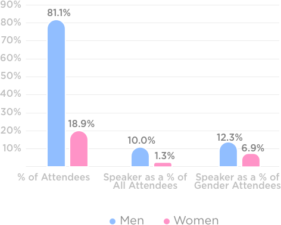

Home
About us
Castell Program
Why Castell Program
Who should attend
Faculty
WILL
Champions
Castell Research
Academic partner
Blog
Conact us
Castell Research
Research Partner Georgia State University
The Survey on Hospitality Women’s Professional Advancement is Castell’s current study of women’s perceptions of their careers.
Castell Project’s Conference Scorecard tracks representation of women – and challenges conferences to improve diversity.
Castell Project’s Executive Tracker reports on representation of women in hospitality industry leadership.
Castell Leadership Program is continually improved using a longitudinal study of the performance of program participants as they pursue their careers.
Women at hunter and ALIS 2016

90%
80%
70%
60%
50%
40%
30%
20%
10%
81.1%
18.9%
10.0%
1.3%
12.3%
6.9%
10%
% of Attendees
Speaker as a %
of All Attendees
Speaker as a % of
Gender Attendees
Men
Women